News
Lindsey Lab in the media. Follow us on X: @The_Lindsey_Lab
2025
-
Pratyush Dhal and Emeline Martin win best poster awards
Graduate student Pratyush Dhal and undergraduate Emeline Martin won best poster awards at the 34th Annual Midwest Thermodynamics and Statistical Mechanics Conference.
-
The Lindsey Lab attends the 34th Midwest Thermodynamics and Statistical Mechanics Conference
The group travelled to the University of Wisconsin–Madison for the annual MTSM conference.
-
Awwal Oladipupo wins People’s Choice Award at Three Minute Thesis
Lab member Awwal Oladipupo won the people’s choice vote in the Three Minute Thesis competition held in February.
-
The Lindsey Lab featured in the department newsletter
Lab members showcase the use of ML and AI in research.
2024
-
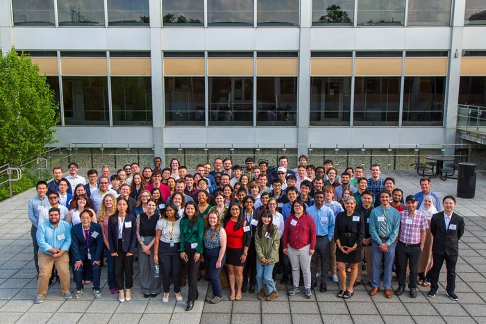
The Lindsey Lab hosts the 33rd Midwest Thermodynamics and Statistical Mechanics Conference
Held at the North Campus Research Complex in Ann Arbor, with 100 registered attendees from 15 institutions across the Midwest.
-
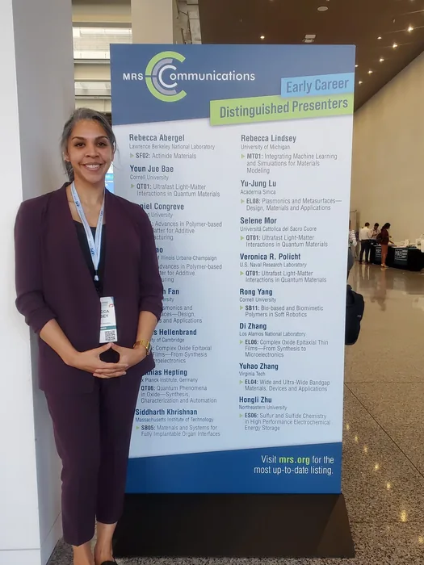
Dr. Lindsey selected as an MRS Communications Early Career Distinguished Presenter
Dr. Lindsey gave an invited talk in the Integrating Machine Learning and Simulations for Materials Modeling symposium at the 2024 MRS Spring Meeting, entitled “Demystifying High Temperature/Pressure Material Synthesis through Physics-Informed Machine Learning.”
2023
-
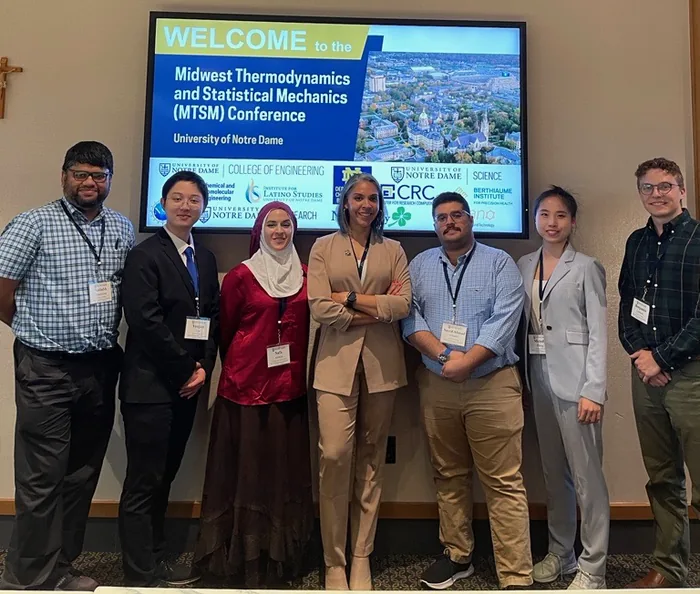
The Lindsey Lab attends the 2023 Midwest Thermodynamics and Statistical Mechanics Conference
The group presented its work at the University of Notre Dame.
-
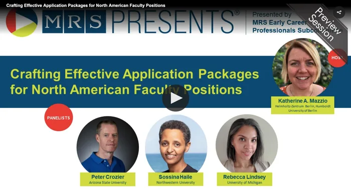
Dr. Lindsey joins MRS panel on applying to faculty positions
The panel, along with a presentation of a recent publication on how faculty packages are assessed, is free to view on the MRS website.
-
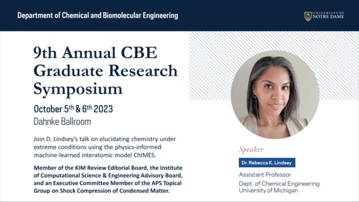
Invited keynote at the 9th Notre Dame Chemical and Biological Engineering Graduate Research Symposium
“Engineering Under Extreme Conditions: Learning to Harness the Power of Nature’s Foundries.”
-
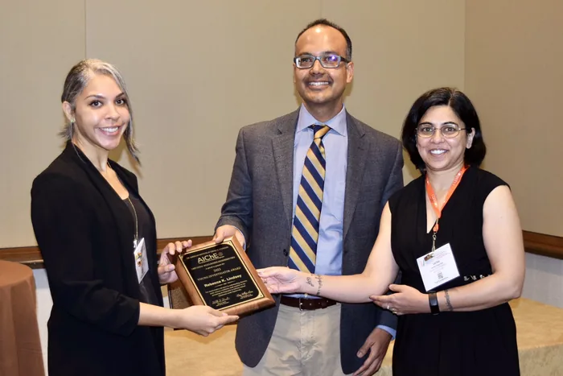
Dr. Lindsey receives the AIChE CoMSEF Young Investigator Award
The award recognizes outstanding research in computational molecular science and engineering, encompassing both methods and applications.
-
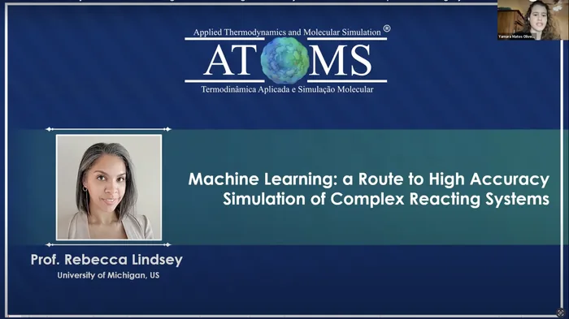
Virtual seminar for the UFRJ ATOMS Lab, Brazil
Dr. Lindsey discussed how the group uses machine-learning-accelerated simulation to demystify chemistry in complex reacting systems.
2022
-
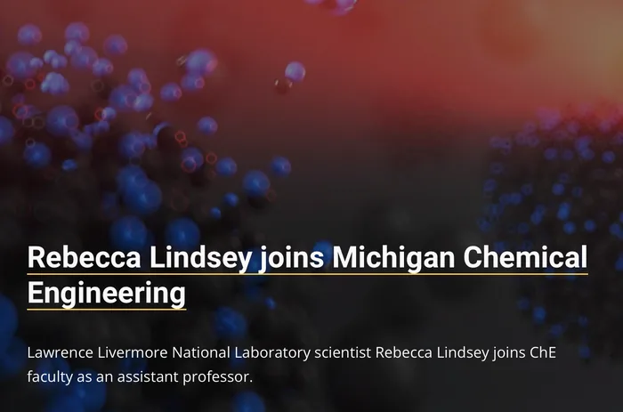
Dr. Lindsey joins U-M Chemical Engineering
A department feature on how Dr. Lindsey got her start in chemical engineering and her academic and professional journey.
-
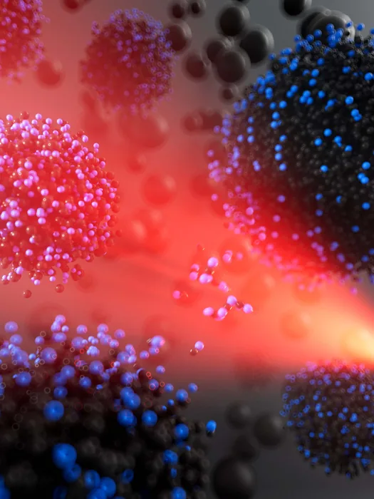
2020
-
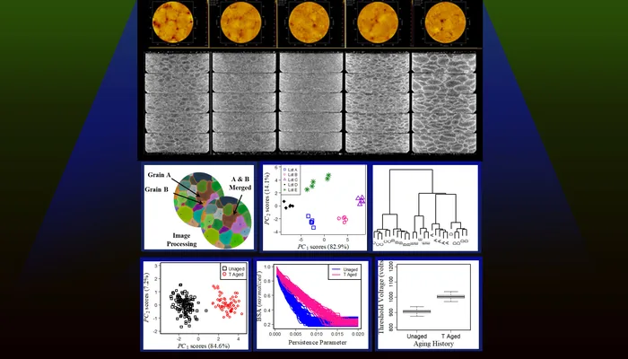
-
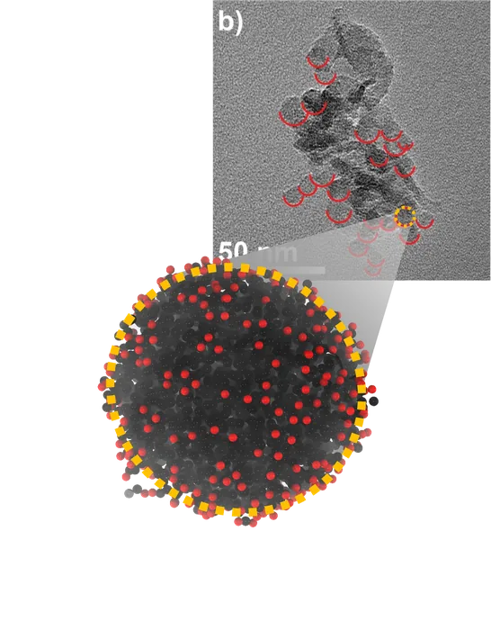
2019
-
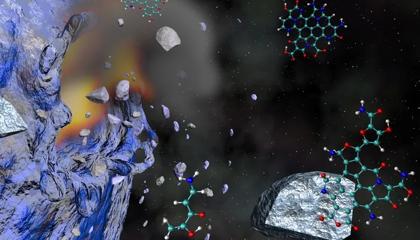